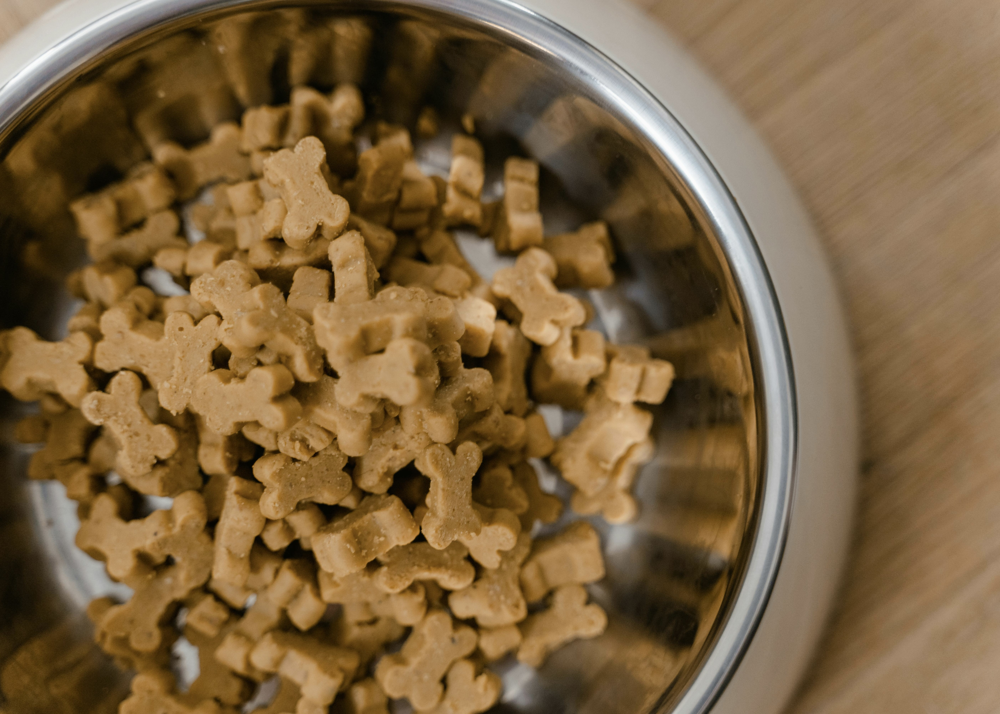
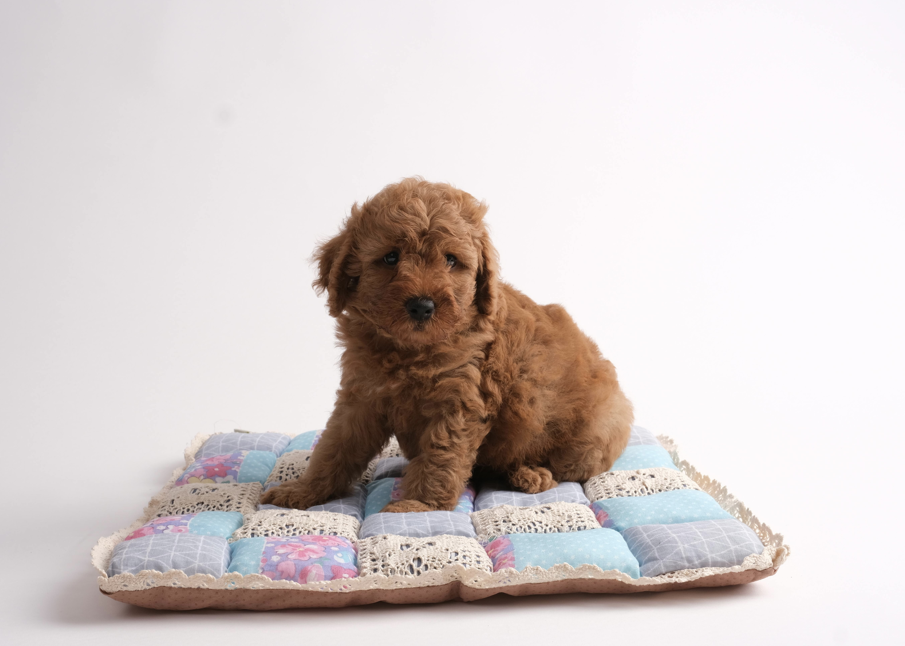
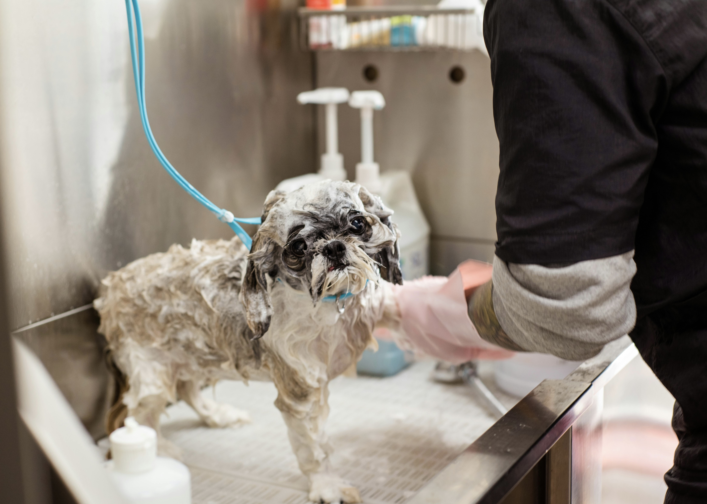
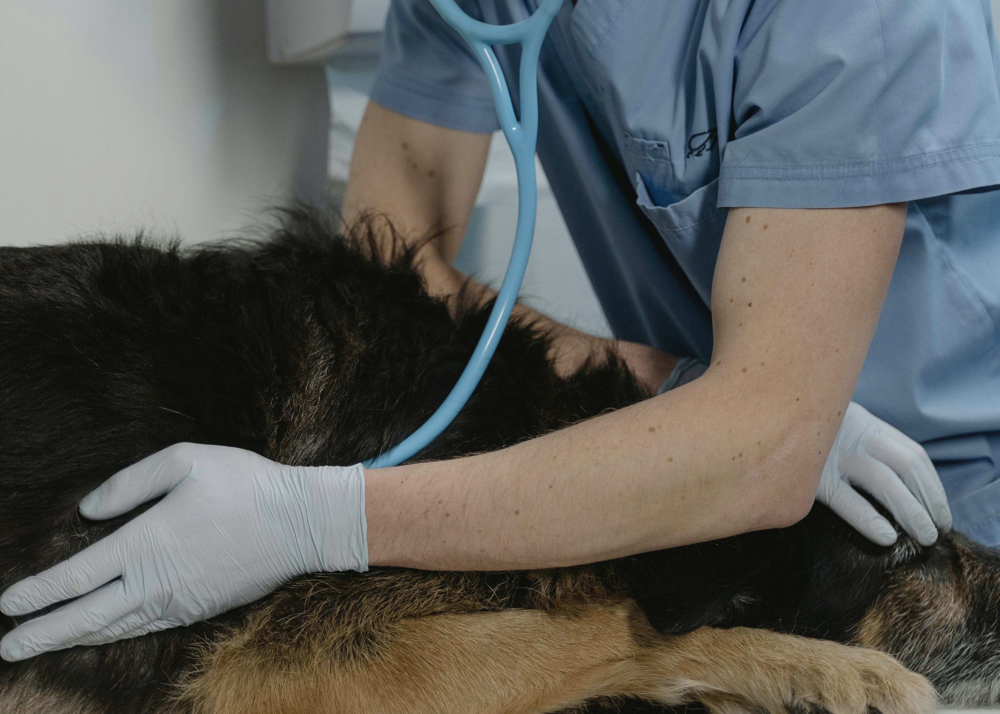

| Dog Type | Exercise | Tips | Sleep | Focus |
|---|---|---|---|---|
| High Energy | 1.5 - 2+ Hours | Jogging, agility. | 12-14 Hours | Quiet space. |
| Mid Energy | 45 - 60 Mins | Leisurely walks. | 12-14 Hours | Quiet environment. |
| Puppy | Short bursts | Socialization. | 18-20 Hours | Growth stability. |
| Senior | 30 - 45 Mins | Gentle massage. | 16-18 Hours | Joint support. |
Go out every 2 hours & after meals. Reward success!
Hold treat over nose. Move it back over head. Praise!
Use a flat palm. Start with 2 seconds, then reward.